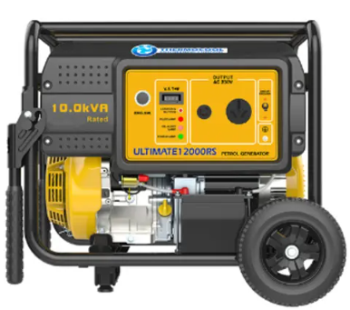

About Us

Amosinecap Global Ents Nig was registered was incorporated in Nigeria in the year 2018 with experiences in the supply, maintenance of electronics appliances for the satisfacion of our customers. Our customers are at the forefront of our services and products which is why we render state - of - the - art products which meet their demands with regards to sustainability, eco-friendliness, and maximum comfort. Our services bears in mind the ISO 14000 series which takes into account all the needs of environmental protection and low waste as well as taking into consideration the future.
Our track records of products of impeccable standard speaks volume for us as we have delivered to households, corporate organization and other entities which help the meet meet their demands and needs. We understand the dynamics and cost of energy within our ecosystem and at such, we have notable lower energy consuming appliances which gives high output with lower energy consumption.
Our clientele spans the length and breadth of the nation. This is on the account of trust and confidence we enjoy from our customers whom we have served. Anywhere you are, we supply to your door step in line with the standard you desired which is a boost on the good will we enjoy today.
We equally use our products with our customers. In otherwords, we render after sales support services to our customers. You are not alone with us.